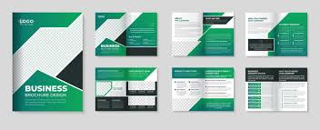

Galerie
Découvrez nos réalisations en matière de chartes graphiques et de designs web.

Charte graphique pour un site e-commerce.

Design moderne pour un portfolio créatif.

Style minimaliste pour un site corporate.

Charte graphique pour une application mobile.